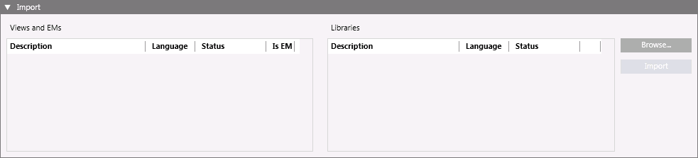

Import of Localized Texts
You can import localized texts for system views and libraries from the translated XML files. Views texts are included in a single XML file, while libraries texts are included in separate files (one per library). For instructions, see Importing Localized Texts.
You may optionally modify file names before importing; the language is identified by the Culture attribute in the XML file’s contents.
Import of translated texts populates the system views and/or libraries according to the new language, which will be available for users associated to it.
Localization Import Workspace
In Engineering mode, when you select the main Project node, the Localization tab provides an Import expander where you can select translated XML files to import into the system.

When the import is complete, the Import dialog box displays a summary of the import information.
You can also view the import log file which contains details of the import operation. The filename is TextImportLogFile_xxx_y.txt, where xxx represents the date and y a number, if more than one file has been created in the same day. This file is saved in the Windows temp folder for the current user.
Items in the expander:
Views and EMs
Lists all the system views and extension modules contained in the selected system views XML file.
Libraries
Lists all the system library files selected for the import.
Browse
Opens the Select the files to import dialog box, where you can select the View and EMs and Libraries XML files to import.
Import
Starts the import of the localized texts related to the selected files.
Status
Indicates the progress or outcome of importing an item (Not processed, Started, percentage of operation, Completed, Failed, or Cancelled).
While the import is in progress, files are imported in the order in which they were selected. The process status information also displays in the status bar.